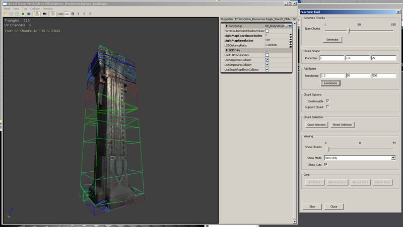

UDN
Search public documentation:
FractureTool
日本語訳
中国翻译
한국어
Interested in the Unreal Engine?
Visit the Unreal Technology site.
Looking for jobs and company info?
Check out the Epic games site.
Questions about support via UDN?
Contact the UDN Staff
中国翻译
한국어
Interested in the Unreal Engine?
Visit the Unreal Technology site.
Looking for jobs and company info?
Check out the Epic games site.
Questions about support via UDN?
Contact the UDN Staff
UE3 Home > Static Meshes > Fractured Static Meshes
UE3 Home > Environment Artist > Fractured Static Meshes
UE3 Home > Environment Artist > Fractured Static Meshes
Fractured Static Meshes
Overview
Basics of the Fracture tool
Tool > Fracture Tool or press the new Fracture tool button (yellow wireframe object). This will open a dialog box containing the options for fracturing this mesh. Once the options are set to the desired values, the Slice button at the bottom of the dialog will perform the fracturing, and will prompt the user for a package/group to store the newly fractured mesh. When a slice pattern is generated, the tool scatters points throughout the collision geometry of the object, and then generates pieces based on those.
How to fracture a mesh
Selection and widgets
Individual chunk origins (and their corresponding chunk) can be selected in the slice pattern and moved using the widget that appears. The lines that appear when a chunk is selected shows that chunk's neighbors, to help visualize the structure of the fragmented mesh. The numbers indicate the area of connection with these neighbours. The pink line indicates the average surface normal of the exterior geometry of that chunk – this is used when the piece breaks away (see below).
Chunk Count
With a Static Mesh open, and the Fracture dialog visible, the first slider in the tool is the Chunk Count value. This determines how many pieces the tool will cut the original mesh into. This is the most obvious place to balance visible impact vs. performance. A large number of chunks means more triangles in the final object, as well as a larger number of actors that the fractured mesh can be broken into. A smaller number means fewer new actors spawned and fewer triangles, but a lower overall fracture count, which can mean a reduced visible impact when the object breaks. Once the object has been sliced, the chunk count may drop slightly. This is due to chunks that are completely inside the object and do not contain any faces that are visible on the surface of the object getting culled.Plane Bias
The next set of values in the Fracture tool is the Plane Bias. This scales in XYZ the fracture planes, resulting in broader or narrower slices depending on the values you input. In the screenshot, you can see that with a larger scale in one or two axes, the mesh gets cut into something resembling slices rather than equal-sized chunks. This can be useful for fracturing different material types, such as getting long narrow splinters out of wood, rather than more regular shaped pieces out of a rock mesh.Modify Points
The modify points tool can be used to either move selected (or all) chunk origins towards the bounds of the object, or perturb some or all of the chunk origins in the slice pattern. Moving the chunk origins towards the bounds is useful for avoiding cases where a significant number of chunks are being discarded because they do not slice the surface of the mesh. Perturbing the origins can be useful to avoid areas where cuts are too linear. You first use the entry boxes to indicate maximum XYZ movement allowed, and then hit either the Move to Faces or Randomize button to modify the chunk centers and see the new slice pattern. If you have some chunks selected, it will only modify the selected set. Chunk Options
The three checkboxes under Chunk Options control whether or not the chunk can be broken away from its parent mesh, whether the chunk can be determined to be connected to the main body of the mesh, and if the chunk will spawn a physical representation of the broken piece.- Destroyable - Determines whether the chunk will react to an impulse to be broken away from the original mesh. If this checkbox is off, the chunk will not react to damage or any other impulse that would normally cause it to break away.
- Support Chunk - Creates 'anchors' in the mesh. If a chunk hasn't been broken away from the mesh, but cannot locate a chunk with this flag enabled through the network of chunks still connected to it, it will become physically active. An example of this is a pillar with support chunks flagged on the base. If the middle of the pillar is removed, even if the top of the pillar hasn't been interacted with, since it can no longer find a connection to the support chunks at the bottom of the original mesh, the top of the pillar will fall over. This can be used in conjunction with the bCompositeChunksExplodeOnImpact flag in the mesh properties. This flag (if enabled) will cause any cluster of chunks that have lost connection to an anchor to fall apart on their next collision with the world. In the previous example of the top of the pillar, as soon as the top of the pillar hit the ground, the chunks that made up that piece of the pillar would fly apart. This is useful to reduce the amount of larger physics objects being simulated in the world. Be sure that
MinSupportConnectionis smaller than all of your connection area results. - Spawn No Physics - Prevents a physical piece from spawning, disregarding the ChanceOfPhysicsChunk settings in the FracturedStaticMesh options.
Chunk Selection
The Chunk Selection buttons are used to grow, shrink or modify the current selection set of chunks. At least one chunk must be selected for these buttons to have any effect. With a chunk selected, you can use the widgets to move the center of that chunk around, which will recalculate the fractures for the mesh. The Select Top and Select Bottom buttons will add the top or bottom-most chunks (determined by the bounding box of the object) to the selection set. This is very useful for quickly setting up which chunks should be support chunks. The Invert Selection button will do as indicated, reverse the selection state of all chunks.
Viewing
The viewing options allow you to restrict the view to one of three options. These options are View Only, which shows only the chunk that corresponds with the current position of the slider, View All But which shows every chunk except the one that corresponds with the slider, and View Up To, which shows only chunks from the current position of the slider and below. The Show Cuts checkbox can be used to stop rendering the wireframe slice pattern that the chunks were generated from. Show Cuts Solid will render the slice pattern as filled objects, making it easier to visualize the slice pattern. Selection of the chunks is easier in this mode, as selections can be made by clicking on the face of the chunk. Show Visible Cuts will only render chunk visualization for chunks that are currently visible. There are several render modes for the chunks, which can be selected using the Slice Color Mode dropdown. Random is the default, and will randomly assign colors to the chunks. Support Chunks will color any support-flagged chunk as red, and any non-support chunk as blue. Destroyable Chunks inverts that, any chunk that is destroyable is red, any non-destroyable chunk is blue. No Physics Chunks will color red any chunk that is flagged to not spawn physics chunks. Show Core toggles the rendering of a core mesh (if one is assigned).Vertex Color
When a mesh is sliced, the interior faces of the mesh have a vertex alpha applied to them. If a vertex is shared with faces that are on the original surface of the mesh, the vertex alpha is set to 1, all other vertices are set to vertex alpha 0. This can be used to have variation in the material based on the depth of the fracture.UVs
If a mesh has a lightmap coordinate set, and has a valid LightMapResolution, the engine will automatically generate lightmap UVs for that mesh, using the original UV channel’s layout. The original lightmap UVs will be scaled slightly, and the new fractured triangles will be arranged in the empty space resulting from this. A useful technique for fractured meshes is to use that UV set as the coordinates for the materials applied to the newly created internal faces. Typically this is done by using a TextureCoordinate node in the material applied to the internal faces, with a CoordinateIndex that is greater than 0.Core
The core of a Fracture Mesh is a separate static mesh that can be merged into the Fractured Mesh and used as internal structure for the fracturing object. A core-mesh does not render until at least one chunk has been removed. To add a core-mesh to the fractured mesh, select a valid Static Mesh in the generic browser, then click on the Add Core button. This will add an instance of that mesh to the viewer, and the widgets will allow you to move and scale this object. Hitting the space bar in this mode will toggle between translate (move) and scale modes. In scale mode, holding SHIFT will scale the core-mesh uniformly, while clicking and dragging on an axis without SHIFT held down will scale along that axis. It is recommended that the object be completely within the geometry of the Fracture Mesh, as it will become visible as soon as a chunk has been removed from the Fracture Mesh. Once the core-mesh is placed and scaled to the desired location, click on Accept Core to refactor the fractures with the core in mind. Once the core-mesh has been added, it can be removed by clicking on the Remove Core button. There can only be one core-mesh per Fractured Mesh. Cores will reslice the Fractured Mesh based on their simplified collision. The simplified collision shape’s planes will attempt to do simple reslicing of chunks, but cannot slice into non-convex shapes. This typically results in thinner chunks on flat surfaces, but does not reslice chunks that contain corners or other more complex geometry.Slice
The Slice button is used to actual modify the mesh and calculate new polygonal faces based on the current slice pattern. When you click on this button, it will open a dialog box prompting the user to place the new Fractured Static Mesh in a package. This is the final step in creating the fractured geometry. This is also the point at which the new UVs for the mesh is generated. All of the newly created faces will be mapped with a new Material, which is blank by default. Chunks which contain no exterior geometry (ie chunks that entirely inside the mesh) are discarded to save polys.Placing a Fracture Mesh in the world
Once the Fracture Mesh has been created and stored in a package, it can be placed in the world. Locate a Fracture Mesh in the generic browser, and select it. Right-click in the world, and chooseAdd Actor -> Add FracturedStaticMesh. This will place the Fracture Mesh in the world and it can now be interacted with.
Note that the bCausesFracture flag on the DamageType class must be set to TRUE for damage to affect the mesh.
Fracture Mesh options
- bCompositeChunksExplodeOnImpact - This flag determines whether portions of the Fracture Mesh that have become disconnected from any chunks that are flagged as Support Chunks will maintain their integrity. If the flag is true, any portion of the Fracture Mesh that collapses when connection to a Support Chunk has been removed will crumble into its individual chunks on contact with the world.
- bFixIsolatedChunks - If this flag is true, the Fracture Mesh will ignore all connections to Support Chunks and will instead treat every chunk as one. This results in all chunks of a mesh remaining in place until broken off regardless of their connection to other chunks in the Fracture Mesh.
- bUniformFragmentHealth – This flag disables adjusting the health per-chunk based on the size of the chunk in relation to the original object. The default behavior causes small chunks to have less health than large ones.
- ChanceOfPhysicsChunk – This scales the percentage chance that a physical representation of the damaged chunk will be spawned when a chunk takes damage. The default is 1.0 (100%).
- ChunkAngVel - Represents the amount of angular (spin) velocity to be imparted to the chunk when it disconnects from the main Fracture Mesh.
- ChunkLinHorizontalScale - This is used to bias horizontal movement over vertical movement when a piece is blown out. A higher value indicates more horizontal velocity.
- ChunkLinVelocity - The amount of velocity away from the mesh that is imparted to the chunk when it disconnects. The direction the chunk moves is determined by the averaged surface normals of the original exterior geometry.
- DynamicOutsideMaterial – If set, this will be set as material for the section given by
OutsideMaterialIndexon spawned dynamic parts. - ExplosionChanceOfPhysicsChunk – This value scales the chance that a physical chunk will be spawned on fracture due to explosion damage.
- ExplosionPhysicsChunkScaleMax – The maximum scale of the physics chunk that is spawned due to explosion damage.
- ExplosionPhysicsChunkScaleMin – The minimum scale of the physics chunk that is spawned due to explosion damage. If both
ExplosionPhysicsChunkScaleMaxandScaleMinare the same, there will be no variation. - ExplosionVelScale – Scales the velocity imparted to a physics chunk when spawned due to explosion damage.
- FragmentDestroyEffect - Entering a Particle System in this field will cause that Particle System to be spawned at the center of any chunk that is broken away from the original Fracture Mesh. The effect is oriented so X points down the ejection direction, and is attached to the falling piece.
- FragmentDestroyEffectScale - A uniform scale that is applied to the
FragmentDestroyEffectwhen it is spawned. - FragmentHealthScale - This scales the default amount of damage that is required to break a chunk away from the Fractured Static Mesh. The health for each chunk is based on its size.
- FragmentMaxHealth – Sets the maximum health a chunk can have.
- FragmentMinHealth – Set the minimum health a chunk can have
- LoseChunkOutsideMaterial – This will override a material applied to spawned physics chunks, the material ID affected is set in the
OutsideMaterialIndex - MinConnectionSupportArea - The amount of surface areas that two chunks have to share to be considered as connected. This determines whether a chunk is connected to Support Chunks in the Fracture Mesh.
- bSpawnPhysicsChunks - Defaults to TRUE. If FALSE, shooting off a piece will not result in a physics piece being spawned. FragmentDestroyEffect is still activated though.
- NormalPhysicsChunkScaleMax - Maximum size of physics chunks spawned by normal damage.
- NormalPhysicsChunkScaleMin – Minimum size of physics chunks spawned by normal damage.
Fracturing limitations
The Fracture tool will work on any static mesh, however some complex geometry shapes will not give optimal results. Optimal results will be obtained if the object has no internal structure. An object with internal faces has a chance (very high chance if the object has interpenetrating faces or has internal open space such as a tube or hollow cube) of creating incorrect faces across the internal portions of the object that are split.The fracture tool only works correctly on meshes that are closed. It also does not work on hollow meshes like pipes.
Technical Information
- Increasing the poly/vert count of meshes when you make them fractured.
- Memory overhead of resulting increase in vertex lighting data.
- Memory overhead of per-instance index buffer.
- Time takes to re-compute the index buffer when changing visibility state.
- Overhead of the spawned, dynamic physics pieces. These use dynamic lighting as well.
FractureManager
There is a FractureManager class defined in the WorldInfo object (set usingFractureManagerClassPath in the *Game.ini file). This class allows you to easily implement various functions of FracturedStaticMesh behavior in a game-specific way, such as spawning physics pieces and firing particle effects.